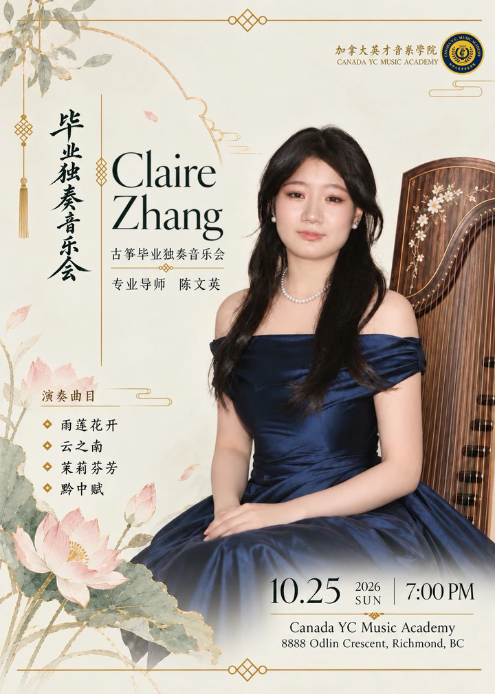

Study
Long-term guzheng study has made rhythm, listening, touch, and sustained attention part of Claire’s everyday musical practice.
The Academy identifies Chen Wenying as her teacher in its recital announcement.
Music / Guzheng
For nine years, Claire has studied guzheng alongside her academic work. Beyond individual practice, Claire has performed in a range of settings and taken part in community activities. Through volunteer performances, she has used music as a way to contribute to the community.
Long-term guzheng study has made rhythm, listening, touch, and sustained attention part of Claire’s everyday musical practice.
The Academy identifies Chen Wenying as her teacher in its recital announcement.
Claire has performed in a range of public settings as part of her continuing musical study.
Her announced solo graduation recital brings that ongoing work into one focused programme.
Community activities and volunteer performances have given music a place beyond individual practice.
They connect performance with contribution, shared attention, and local participation.

Announced recital
The Academy announces Claire’s solo graduation guzheng recital for , at Canada YC Music Academy in Richmond, British Columbia.
Read the Academy announcementProgramme

Website feature
This website-made interaction pairs gesture, light, and a credited guzheng sample. It is separate from Claire’s artwork, software projects, and performances.
Open the sound experience